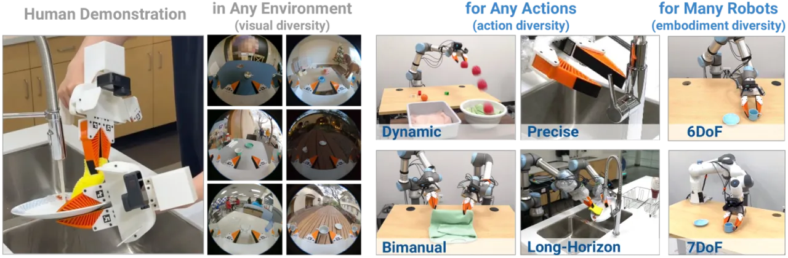
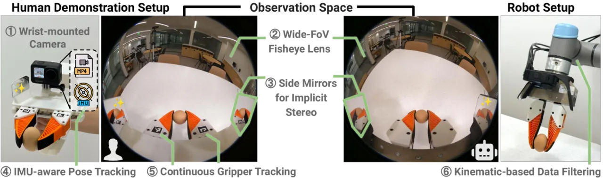
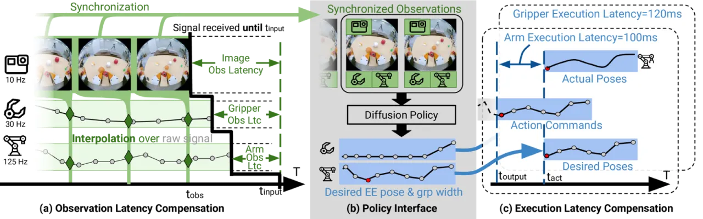
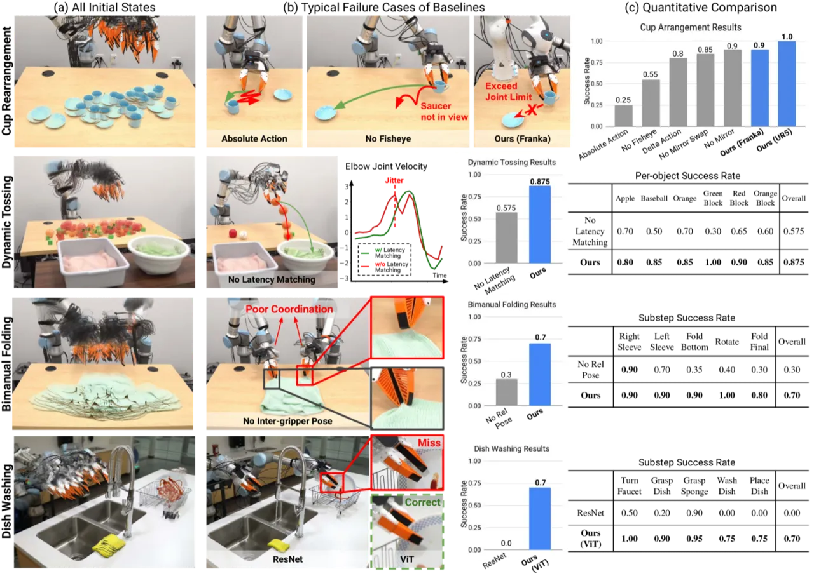
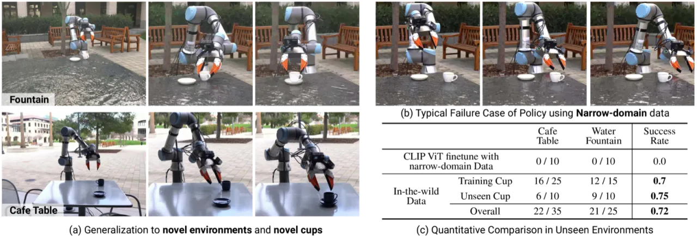

UMI（Universal Manipulation Interface）提出了一套"野外人类演示 → 可部署机器人策略"的完整框架：研究者手持轻量级夹爪在任意真实场景采集示范，通过鱼眼相机、视觉惯性 SLAM 和推理时延迟匹配，将人类动作精确转化为机器人可执行的相对轨迹，最终训练出可在多款机器人上零样本泛化的硬件无关策略（hardware-agnostic policy）。
机器人操作策略的训练数据严重不足：远程操控需要昂贵硬件和专家操作员，而直接利用人类在野外的视频又存在巨大的动作域差（embodiment gap）。现有手持夹爪方案往往只能处理简单的拾取任务，无法支持动态投掷、双臂折叠或长时序洗碗等复杂操作。
"We identify four core issues that prevent direct action transfer from human demonstration to robot execution: insufficient visual context, action imprecision, latency discrepancies, and insufficient policy representations for multimodal action distributions."

UMI 分为两个设计层次：演示接口（Demonstration Interface, HD1–HD6）解决数据采集中的观测与动作精度问题；策略接口（Policy Interface, PD1–PD2）解决训练到推理的延迟和坐标系不一致问题。两者共同支撑以 Diffusion Policy 为骨干的硬件无关策略。

单相机安装于夹爪腕部，消除外部相机的标定需求，并通过相机运动自然实现数据多样化。采用 155° 鱼眼镜头（raw fisheye，不做矫正），在保留中心分辨率的同时压缩边缘信息，策略学习效果优于等效pinhole模型（消融：去掉鱼眼后杯子任务从100%降至55%）。
在夹爪两侧放置物理反射镜，使单张图像中隐含立体视角（implicit stereo）。训练时对镜像内容做数字翻转（digital reflection），获得最优策略效果（消融：去掉镜面翻转后成功率从100%降至85%）。
将 GoPro 内置 IMU 与 ORB-SLAM3 结合，实现视觉-惯性 SLAM。即使存在运动模糊也能保持追踪，并恢复具有度量尺度（metric scale）的动作——这对动态投掷等任务至关重要。SLAM 位置精度：6.1mm 平均轨迹误差，旋转精度：3.5°。
通过 fiducial markers 连续跟踪夹爪宽度（而非二值开/闭），实现精确时序控制和隐式力控（soft-finger deformation）。训练时通过运动学可行性过滤，将机器人无关的演示数据适配到具体机器人。

策略骨干网络采用 Diffusion Policy，专为建模多峰动作分布设计，适应野外数据中自然存在的多模态行为。
实验分为两类：窄域能力验证（单场景，含完整消融）和野外泛化（30个多样场景，15种杯子）。机器人平台：UR5 + Franka FR2；演示采集：每任务250–305条；评估：每条件20次（投掷120次）。
| 任务 | 演示数量 | Full UMI | 关键消融对比 |
|---|---|---|---|
| Cup Arrangement（杯子摆放） | 305 | 20/20 (100%) | 无鱼眼: 55% · delta动作: 80% · 绝对动作: 25% |
| Dynamic Tossing（动态投掷） | 280 | 105/120 (87.5%) | 无延迟匹配: 57.5% |
| Bimanual Cloth Folding（双臂折衣） | 250 | 14/20 (70%) | 无双臂相对位姿: 30% |
| Dish Washing（7步洗碗） | 258 | 14/20 (70%) | ResNet-34（无CLIP）: 0% |

以 Cup Arrangement 为泛化测试任务，在 30 个多样场景（家居、办公室、餐厅、户外）共采集 1,400 条演示，涵盖 15 种不同杯子，采集时间约 12 人时。
| 测试环境 | 已见杯子 | 未见杯子 | 合并 |
|---|---|---|---|
| 咖啡桌（Cafe table，未见场景） | 28/40 (70%) | 15/20 (75%) | 43/60 (71.7%) |
| 饮水机旁（Water fountain，分布外） | 包含在合并结果中 | 71.7% | |
| 窄域对照基线（同预训练权重） | 0%（在新环境完全失败） | ||

UR5 上采集的杯子摆放演示直接迁移至 Franka FR2，成功率 18/20 (90%)，验证了硬件无关策略的零样本跨平台迁移能力。
ORB-SLAM3 在纹理匮乏的场景（如纯白墙面、低光照环境）下追踪失败，导致无法恢复度量尺度动作。作者明确指出这是当前方案的主要瓶颈之一。
采集的人类演示数据需要在训练阶段针对具体机器人执行运动学可行性过滤（kinematic feasibility filtering），系统尚未实现端到端的体态感知学习（embodiment-aware learning）。
780g 的夹爪重量和两指结构限制了采集效率（仅达人手速度 48%）及可表达的操作多样性，与人手相比在灵巧度上有明显差距。
野外泛化实验表明，策略的跨场景迁移能力直接依赖于演示数据覆盖的场景和物体多样性；当测试场景与演示分布差异过大时，成功率会显著下降（inferred from 实验设计）。